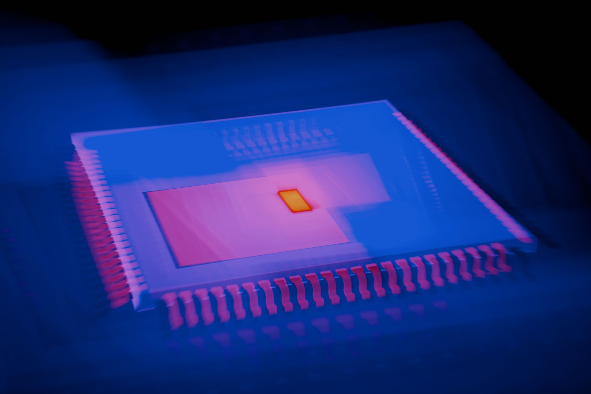

KAIST, AI로 2D 반도체 소재 자동 탐색 성공

KAIST(한국과학기술원) 연구팀이 인공지능(AI)을 활용해 차세대 반도체 소재로 주목받는 2차원(2D) 반도체 소재를 자동으로 탐색하고 성능을 평가하는 시스템 개발에 성공했다. 이는 기존에 연구자가 수작업으로 수행하던 소재 탐색 과정을 AI가 대신하는 자동화 시대의 개막을 알리는 것으로 평가된다.
2차원 반도체 소재란 원자 단 한 층 또는 몇 층 두께의 극초박막 구조를 가진 소재를 말한다. 대표적으로 그래핀, 이황화몰리브덴(MoS₂), 질화붕소(hBN) 등이 있으며, 기존 실리콘 반도체의 한계를 극복할 수 있는 '꿈의 소재'로 불린다. 원자 두께의 얇은 구조 덕분에 전력 소모가 극히 낮고 고집적 회로 구현이 가능해 AI 반도체의 차세대 소재로 각광받고 있다.
KAIST 연구팀이 개발한 AI 자동화 시스템은 고속 이미지 인식 알고리즘과 머신러닝 기반 성능 예측 모델을 결합한 방식이다. 현미경으로 촬영한 소재 이미지를 AI가 분석해 2D 반도체의 층 수, 결함 밀도, 전기적 특성 등을 자동으로 평가하고 최적 후보 소재를 선별한다. 기존 방식 대비 소재 탐색 시간을 100배 이상 단축할 수 있다고 연구팀은 밝혔다.
연구 책임자인 KAIST 전기전자공학부 A 교수는 '기존에는 연구자 한 명이 하루에 수십 개의 소재 샘플을 검토하는 것이 한계였지만, 이번 AI 시스템을 적용하면 하루 수천 개의 샘플을 자동으로 분석할 수 있다'고 설명했다. 그는 '이 기술이 상용화되면 2D 반도체 소재 개발 주기가 현재 수년에서 수개월로 획기적으로 단축될 것'이라고 강조했다.
이번 연구는 단순한 소재 탐색을 넘어 AI가 소재의 전기적·물리적 특성을 예측하고, 특정 반도체 소자에 최적화된 소재를 추천하는 수준까지 발전했다. 예를 들어 저전력 고성능 트랜지스터에 가장 적합한 소재, 또는 광센서에 최적화된 소재를 AI가 스스로 찾아내는 방식이다. 이는 소재 개발 패러다임을 '발견(Discovery)'에서 '설계(Design)'로 전환하는 의미가 있다.
2D 반도체 소재 시장은 현재 연구 단계를 벗어나 상용화 초기 단계에 진입하고 있다. 인텔, TSMC, 삼성전자 등 주요 반도체 기업들은 1나노미터 이하 공정에서 실리콘을 대체할 소재로 2D 반도체를 연구하고 있다. 시장조사기관 IDTechEx에 따르면 글로벌 2D 소재 시장은 2030년까지 30억 달러 규모로 성장할 것으로 전망된다.
국내에서는 삼성전자, SK하이닉스와 함께 레이크머티리얼즈 등 소재 기업들이 2D 반도체 소재 연구에 참여하고 있다. 레이크머티리얼즈는 전고체 배터리 소재에 이어 반도체 소재로 성장 축을 다각화하는 과정에서 2D 반도체 소재 관련 원료 공급 역량을 확보하고 있다. 이번 KAIST의 AI 자동화 기술이 상용화되면 국내 소재 기업들의 개발 효율도 크게 향상될 전망이다.
글로벌 경쟁 측면에서 미국 MIT, 스탠퍼드, 영국 케임브리지 등 주요 대학과 구글, 마이크로소프트 등 빅테크 기업들도 AI를 활용한 소재 탐색 연구에 막대한 투자를 이어가고 있다. 미국 에너지부(DOE)는 AI 기반 소재 발견 플랫폼 구축에 수억 달러를 지원하고 있어 글로벌 경쟁이 갈수록 치열해지고 있다.
KAIST 연구팀은 이번 AI 자동화 시스템을 오픈소스로 공개해 국내외 연구자들이 활용할 수 있도록 할 계획이다. 이를 통해 글로벌 2D 반도체 소재 연구 커뮤니티에서 한국의 존재감을 높이고, 관련 표준 및 플랫폼 선점을 통해 기술 주도권을 확보하겠다는 전략이다.
반도체 업계 전문가는 'AI를 활용한 소재 자동 탐색 기술은 단순히 연구 효율을 높이는 것을 넘어, 인간이 직관적으로 떠올리기 어려운 완전히 새로운 소재 조합을 발견할 가능성을 열어준다'며 '이 기술이 완성도를 높여가면 반도체 소재 개발의 게임체인저가 될 수 있다'고 평가했다.
정부는 AI 활용 반도체 소재 연구를 국가 R&D 전략 우선 분야로 지정하고, 산학연 협력 프로그램을 통해 지원을 확대하고 있다. 과학기술정보통신부는 '반도체 소재 AI 연구 플랫폼 구축 사업'을 통해 향후 5년간 500억 원 이상을 투자할 계획이며, KAIST를 포함한 주요 대학들이 참여하는 컨소시엄 형태로 운영될 예정이다.
이번 KAIST의 연구 성과는 국내 반도체 소재 연구의 글로벌 경쟁력을 한 단계 끌어올린 중요한 성과로 평가된다. 향후 이 기술이 실제 반도체 소재 기업들의 개발 공정에 도입되면, 소재 개발 비용 절감과 시장 출시 기간 단축이라는 두 마리 토끼를 동시에 잡는 효과를 낼 것으로 기대된다.